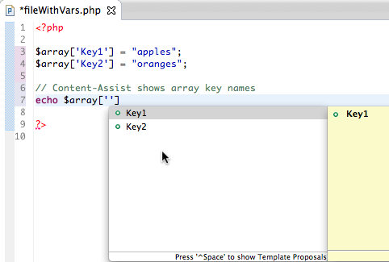
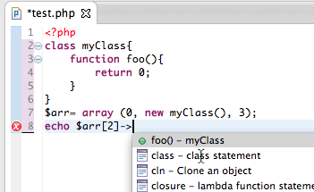
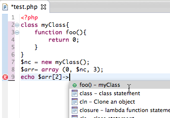
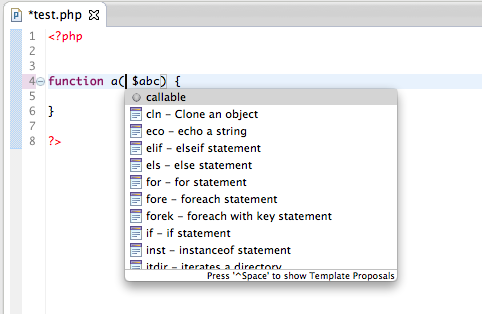
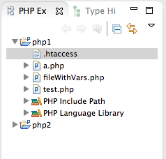
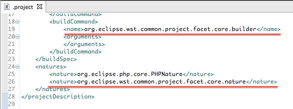

PDT 3.1.1 released on September 28th, 2012 contains nearly 100 bug fixes for issues reported over last three months, since the release of Eclipse Juno. Beside bug fixes, there are several new features added to make PDT Content-Assist smarter, to better support PHP 5.4 traits and other new language additions.
PDT 3.1.1 can be installed from Eclipse repository at:
http://download.eclipse.org/tools/pdt/updates/release




We added initial support for WST facets, to simplify framework and webservers integration in next PDT versions. If you plan to develop a plugin to support your framework in PDT please contact pdt-dev@eclipse.org for details.
